Módulo 5 . Aula 6
Como encontrar, usar, criar e compartilhar Recursos Educacionais Abertos
Módulo 5 . Aula 6
Como encontrar, usar, criar e compartilhar Recursos Educacionais Abertos
 Objetivos da aula
Objetivos da aula
Esta é a penúltima aula do nosso curso. Esperamos que ao final desta aula você possa:
- Identificar onde encontrar Recursos Educacionais Abertos.
- Aplicar estratégias de busca de REA.
- Reconhecer condições de uso de recursos abertos.
- Compreender a importância do compartilhamento de REA.
- Compreender o processo de produção de REA.
Ações para utilização dos Recursos Educacionais Abertos
Como visto nas aulas anteriores, os Recursos Educacionais Abertos (REA) surgem como uma alternativa significativa para promover acesso mais amplo ao conhecimento e fomentar práticas de ensino mais colaborativas. Eles consistem em materiais de ensino, aprendizagem e pesquisa que estão em domínio público ou licenciados abertamente, o que permite seu uso, adaptação e irrestrito compartilhamento.
Os REAs podem assumir diversos formatos, incluindo:
O incentivo ao uso desses recursos tem sido promovido em vários países como forma de aumentar o acesso à educação e fortalecer a colaboração entre educadores. Para entender qual percurso seguir para achar, usar, criar e compartilhar um REA, siga a trilha proposta no infográfico abaixo:
pan_tool_alt CliqueToque nos botões para visualizar as informações
pan_tool_alt CliqueToque nos botões a seguir e conheça os detalhes para cada ação de utilização dos Recursos Educacionais Abertos
Como encontrar Recursos Educacionais Abertos (REA)
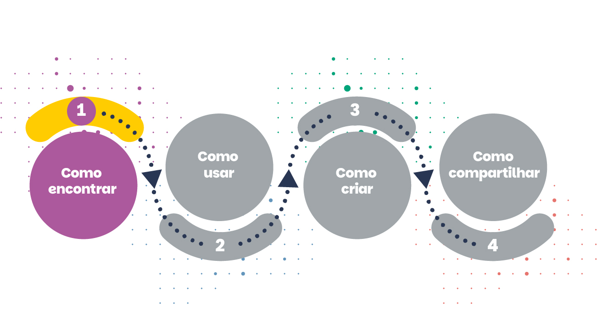
Planejando a busca por REA
Um dos primeiros e mais importantes passos na busca por Recursos Educacionais Abertos (REA) é ter clareza sobre o que se procura. Você está procurando, por exemplo, vídeos a respeito de dengue? Ou você está buscando um curso abrangente sobre Estratégia de Disseminação de Larvicida para combate ao mosquito Aedes em formato aberto para nível inicial?
Quando se pode restringir a pesquisa a um campo específico de conhecimento e ter precisão sobre o tipo de recurso educacional que se procura, o processo de localizar REA torna-se significativamente mais fácil e eficaz.
Antes de iniciar a busca por um REA, é importante definir alguns aspectos que podem orientar o processo de pesquisa e resultados. São eles:
pan_tool_alt CliqueToque e arraste os cards para ver as informações
Esse planejamento ajuda a tornar a busca mais eficiente e facilita a identificação de materiais mais adequados ao contexto educacional.
Estratégias para buscar REA
Ao iniciar o processo de busca por REA, algumas práticas podem tornar mais fácil a localização e a recuperação de materiais apropriados, como:
- Utilizar palavras-chave relacionadas ao tema.
- Navegar e explorar repositórios especializados em REA.
- Verificar se o recurso encontrado possui licença aberta.
- Empregar filtros de licenças nos mecanismos de busca.
- Observar as informações sobre autoria e data de publicação.
Essas práticas podem assegurar que o recurso encontrado seja usado e reutilizado conforme os princípios da Educação Aberta.
Onde encontrar Recursos Educacionais Abertos
Atualmente existem diversos repositórios digitais que organizam e disponibilizam REA, inclusive por área temática, nível educacional e tipo de material.
Você pode começar por meio de um mecanismo de pesquisa geral e algumas palavras-chave cuidadosamente escolhidas. Se você precisar pesquisar mais, tente diretamente em algum repositório de REA. A iniciativa do Mapa Global de REA pode auxiliar a encontrar o recurso que deseja, sendo esta uma ferramenta que possibilita a busca em diversos repositórios ao redor do mundo.
Vale destacar que os recursos encontrados podem atender à necessidade em sua totalidade ou apenas ser o começo de um novo recurso educacional aberto. Para utilizar os REA de forma segura, é indicado buscar em plataformas que já reúnem recursos que possam ser adaptados e permitam reprodução. Veja alguns dos principais nacionais e internacionais:
| Plataforma | Descrição |
|---|---|
| Domínio público | Portal que reúne o maior acervo mundial de conteúdos literários, artísticos e científicos disponíveis para uso livre e gratuito. |
| Plataforma de recursos digitais do MEC | A partir de uma iniciativa do Ministério da Educação, surge, em outubro de 2015, a proposta da Plataforma de reunir e disponibilizar em um único lugar os Recursos Educacionais Digitais dos principais portais do Brasil. |
| eduCAPES | Repositório digital de recursos educacionais inseridos por instituições públicas de ensino superior (com enfoque nas que fazem parte da Universidade Aberta do Brasil) e parceiros. A maioria dos recursos possui acesso aberto. |
| Internet Archive | Plataforma com diversos conteúdos livres (livros, imagens, áudios, vídeos) disponíveis e organizados em coleções. Permite que você baixe os recursos em diversos formatos abertos. |
A seguir, destacamos com mais detalhes algumas ferramentas que podem ajudar a encontrar recursos abertos na internet. Lembre-se de que é sempre importante verificar a licença de uso de cada material encontrado antes de fazer uso dele.
Veja também as ferramentas que podem ajudar a encontrar recursos em saúde.
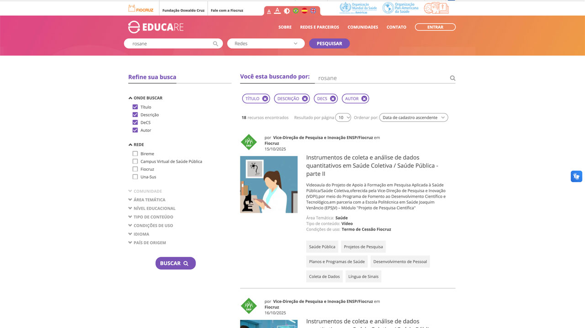
A Plataforma Educare é uma iniciativa da Fiocruz que permite recuperar diversos recursos educacionais abertos na área da saúde. Por se tratar de uma plataforma dedicada a prover armazenamento e recuperação de REA, todos os materiais digitais encontrados já estão disponíveis em licenças abertas.
Você pode iniciar digitando um termo ou palavra-chave no campo de busca. Na tela seguinte é possível refinar a busca pelo tipo de mídia, área temática, nível educacional e outros.
Fonte: Plataforma Educare (2026).
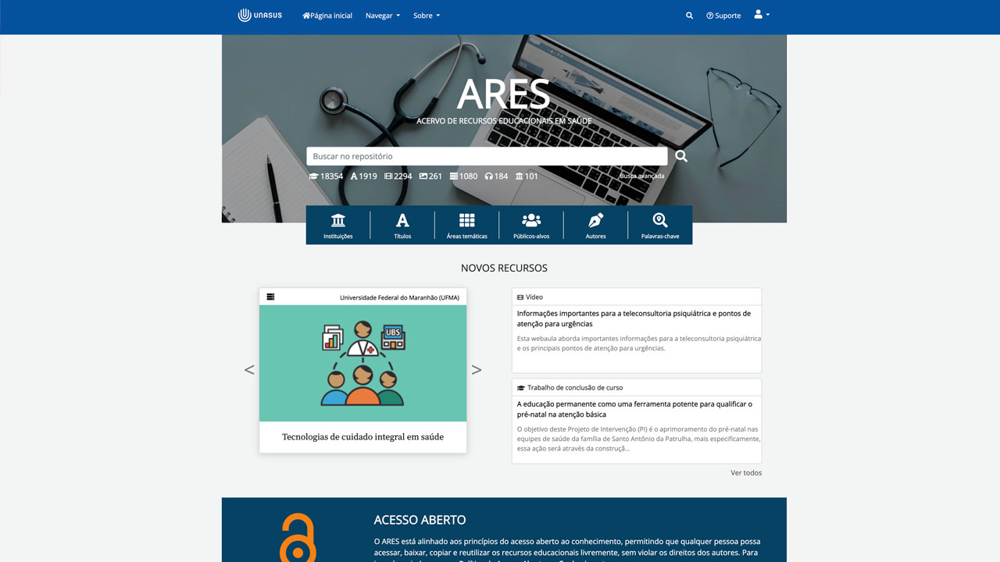
O Acervo de Recursos Educacionais em Saúde (ARES) é uma plataforma digital que permite acesso, download e reutilização de recursos educacionais digitais desenvolvidos pelas instituições da Rede UNA-SUS para o ensino-aprendizagem de trabalhadores da saúde. É um acervo público, com recursos em diferentes formatos, como textos, vídeos, imagens e materiais multimídia, nas mais diversas temáticas da saúde.
Fonte: Ares/UNA-SUS (2026).
Curadoria de REA
A grande quantidade de materiais educacionais disponíveis na internet torna o processo de curadoria uma prática indispensável para auxiliar o reúso de REA, evitando riscos de usar conteúdos desatualizados, sem a licença adequada, desalinhado do planejamento pedagógico.
O processo da curadoria consiste em pesquisar, selecionar, organizar e contextualizar recursos educacionais pertinentes e alinhados aos objetivos de aprendizagem.
A curadoria de REA tem como objetivo:
- Construir um repertório de materiais educacionais.
- Facilitar o acesso a conteúdos atualizados.
- Fomentar práticas pedagógicas colaborativas.
- Fortalecer redes de compartilhamento de conhecimento.
Como usar Recursos Educacionais Abertos
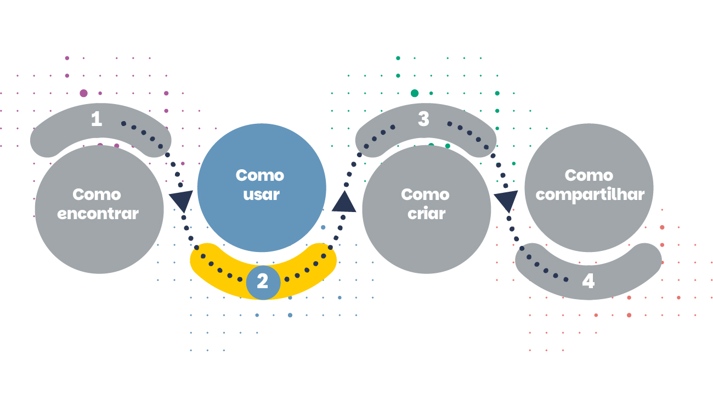
Vamos iniciar esse tópico com uma simulação comum na vida acadêmica:
Maria é professora e deseja utilizar um vídeo sobre vacinação em um curso de formação em saúde. Ela encontra um vídeo gratuito na internet, mas não há indicação de licença. O que Maria deve fazer?
-
a) Utilizar o vídeo livremente.
-
b) Verificar se o vídeo possui licença aberta antes de utilizá-lo.
-
c) Adaptar o vídeo sem citar o autor.
-
d) Adaptar o vídeo sem citar o autor.
Vamos entender melhor! Os REA têm sido objeto de debates e seu uso estimulado entre várias redes e comunidades de aprendizagem, intensificando capacitações para docentes e alunos, promovendo diferentes iniciativas e garantindo a ampliação do conhecimento e de acesso à informação.
Vale ressaltar que o desenvolvimento e uso de REA podem ser relacionados como parte de práticas inovadoras de ensino, embora seja necessário investir na avaliação dos recursos para garantir materiais de qualidade e que proporcionem impacto positivo na educação.
O uso de REA pode ser visto a partir de duas perspectivas diferentes: docentes e alunos. Vamos entender as duas a seguir:
REA e docentes: usar e promover
Os REA podem contribuir muito no processo de aprendizagem, tanto para docentes como para alunos, em diversos níveis de escolaridade, com diferentes metodologias e contextos distintos, e para modalidade presencial, híbrida ou EAD.
De acordo com as premissas adotadas no Manual REA para Educadores, podemos afirmar que são muitas as maneiras de se propor a utilização dos REA pelos docentes, tanto em sala de aula, como em materiais didáticos ou adaptando para novos recursos. A seguir, um resumo de algumas das maneiras pelas quais os educadores podem usar e promover REA:
pan_tool_alt CliqueToque e arraste os cards para ver as informações
Fonte: WikiEducator com adaptação do conteúdo (2026).
Vale ressaltar ainda a importância de se integrar os REA a práticas de ensino-aprendizagem, que devem considerar o modelo pedagógico adotado, os objetivos de aprendizagem, o público-alvo para a formação específica e os resultados esperados.
Existem algumas etapas recomendadas para a integração de REA às práticas docentes. São elas:
Avaliar a validade e a confiabilidade do REA.
Verificar se o REA se adéqua ao currículo ou proposta do curso ou aula a ser construída.
Certificar que o REA está de acordo com licença aberta e se é suficiente para o seu objetivo.
Adaptar o conteúdo para seus objetivos (assumindo que a licença permita derivativos).
REA e estudantes: como usar
O uso de REA por alunos pode trazer não só mudanças na forma como o aluno se coloca em sala de aula, mas também para sua percepção da aprendizagem. Muito se tem falado na literatura sobre as trilhas de aprendizagem, reforçando a importância não só do conhecimento adquirido, mas igualmente da pré e da pós-aprendizagem e sua relação com a prática e vivência do aluno.
"As trilhas de aprendizagem podem ser entendidas como um conjunto sistemático e multimodal de unidades de aprendizagem, contendo diferentes esquemas de navegação, que podem ir desde modelos lineares, prescritivos, passando-se por modelos mais hierárquicos, e chegando-se a modelos em rede, cuja navegação é mais livre, e tendo como propósito o desenvolvimento de competências. Esses esquemas de navegação podem ser personalizados, com base em variáveis como objetivos, perfil do aluno e características de aprendizagem. No domínio da Educação, uma trilha de aprendizagem é fundamental para o processo de ensino-aprendizagem, uma vez que integra um conjunto de atividades em uma sequência apropriada, possibilitando ao estudante apreender os conteúdos de maneira mais eficaz. "
(Lopes; Lima, 2019).
Os Recursos Educacionais Abertos (REA) não são úteis apenas para professores, pois os estudantes podem obter benefícios próprios e únicos ao utilizar Recursos Educacionais Abertos (REA) como um facilitador para o desenvolvimento do aprendizado baseado em uma perspectiva colaborativa, e promover seu uso por meio dos seguintes tipos de atividades (sempre respeitando as regras/restrições das licenças aplicáveis):
pan_tool_alt CliqueToque e arraste os cards para ver as informações
Fonte: WikiEducator com adaptação do conteúdo (2026).
Veja a seguir um exemplo de formação em Saúde Pública que demonstra como os REA podem ser utilizados para apoiar processos de formação profissional e disseminação de conhecimento.
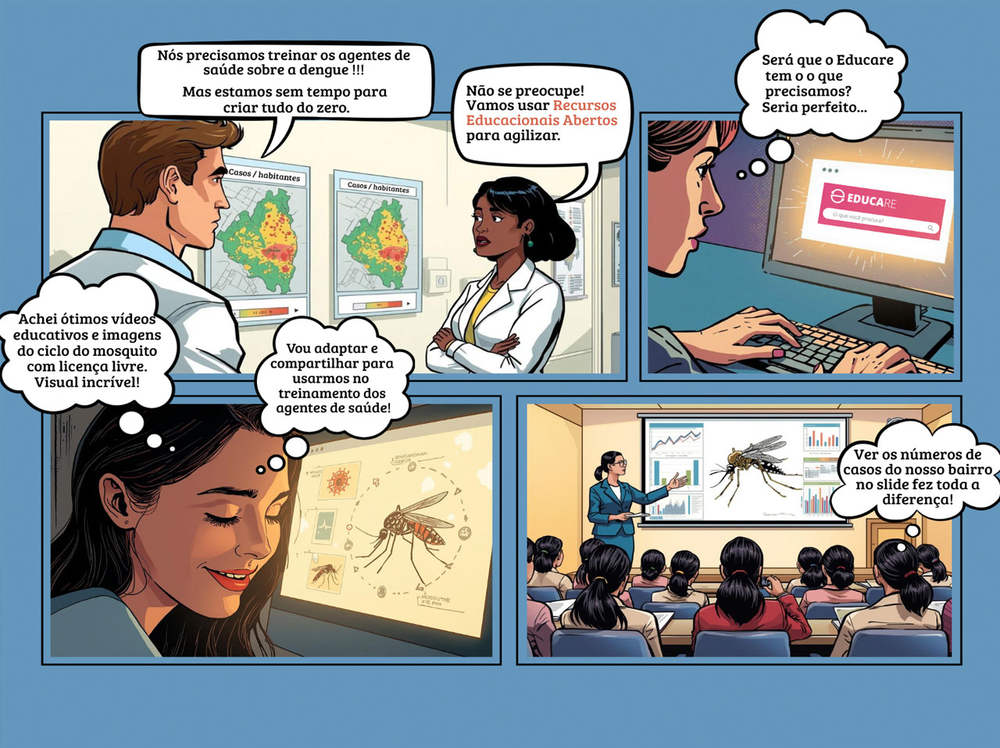
Para fecharmos esta etapa, assista ao vídeo a seguir em que Ederson Granetto da UNIVESP entrevista Bianca Santana, do Instituto Educadigital, sobre recursos educacionais abertos — materiais de ensino, aprendizagem e pesquisa que estão em domínio público ou possuem licenças abertas, permitindo seu uso, adaptação e compartilhamento por outras pessoas.
Vídeo - Recursos Educacionais Abertos – Bianca Santana
Fonte: WikiEducator com adaptação do conteúdo (2026).
Como criar Recursos Educacionais Abertos
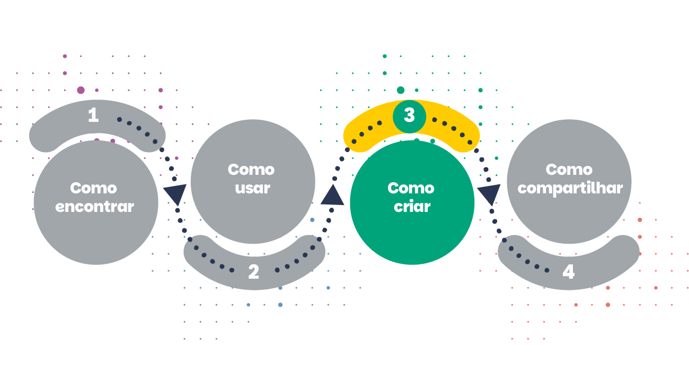
A ideia dos movimentos do software livre de desenvolver software gratuito e de código aberto, bem como a busca do Creative Commons por alternativas de licenças abertas aos direitos autorais tradicionais tiveram um forte impacto nas maneiras como pensamos sobre educação e recursos educacionais.
A tarefa de criar Recursos Educacionais Abertos (REA) representa um aprendizado constante sobre temas relacionados à internet e tecnologias digitais e sobre os conceitos citados neste curso. Ao criar um REA, você contribui para ampliação da produção de conhecimento e culturas livres na internet (Pretto, 2012).
Como já citado durante as aulas anteriores, para permitir que outras pessoas façam alterações, adaptações e revisões será necessário compartilhar arquivos editáveis, ou seja, desenvolvidos em formatos abertos.
Antes de entrarmos em um maior detalhamento sobre o processo de criação de REA, destacamos a seguir um mapeamento das etapas que caracterizam o ciclo de vida de um REA.
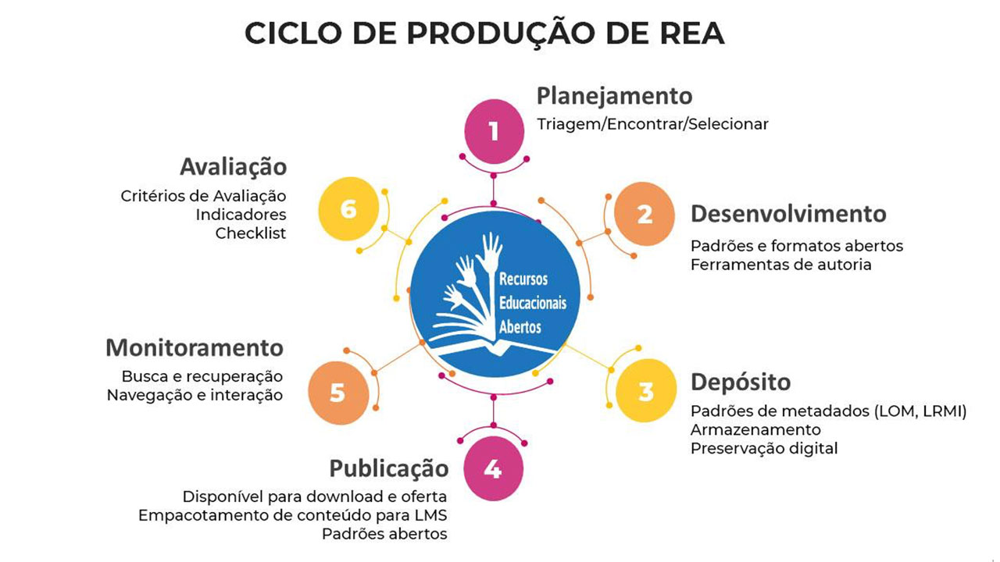
No intuito de simplificar o entendimento das principais etapas de criação de um REA, apresentamos a seguir uma estrutura de fluxo que poderá auxiliar o gerenciamento do processo de desenvolvimento de REA na sua instituição. O fluxo é um desdobramento do ciclo de vida de um REA, cobrindo as etapas até o momento da publicação. Durante o fluxo, algumas perguntas são feitas em vários pontos com orientações e indicações para consultar os especialistas em REA.
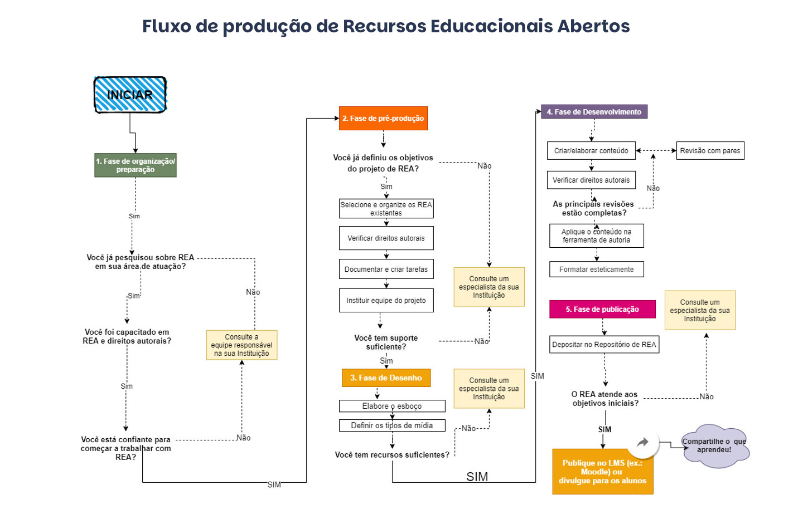
Ao desenvolver seu projeto de REA, recomenda-se explorar algumas questões norteadoras:
- O REA de que você precisa já existe? Seus próprios materiais de ensino podem ser adaptados para uso como REA?
- Como você define o público-alvo?
- Quais os objetivos educacionais?
- Para quais cursos seu REA pode ser usado?
- Você planeja desenvolver materiais adicionais (isto é, exercícios, pasta de trabalho) para acompanhar o seu REA?
- O seu REA será interativo?
- Já possuo capacitação necessária para criar REA?
Essa fase envolve a curadoria dos recursos existentes que possam ser reutilizados e o planejamento do desenho geral do projeto, ainda não é a etapa de adaptação ou da criação de novos conteúdos. O foco deve ser a elaboração de um esboço básico, planejamento e gerenciamento de tempo, tarefas e equipe.
Essa é a etapa anterior ao trabalho de conteúdo dos REA. Caso o projeto contemple apenas a adaptação do REA, essa pode ser a etapa final, além da preparação de documentos instrucionais. Durante essa fase os contornos do projeto e os documentos do esboço são aprimorados, e os REA existentes são ajustados em locais em que se acredita serem aplicáveis. Todos os trabalhos e processos de design visual/gráfico que requerem assistência de um designer instrucional estão incluídos aqui.
Essa é a fase que mais demanda tempo de execução em um projeto de REA, quando se dá início à construção de novos materiais. Os REA existentes que estão sendo adaptados ou modificados passam por revisão e se verificam questões de propriedade intelectual (qual licença está no conteúdo, nas imagens, nos vídeos e se tudo foi atribuído de forma apropriada).
A fase final envolve publicar e compartilhar o conteúdo que foi criado. Isso inclui a criação de versões para exportação, o depósito de arquivos editáveis para posterior edição e adaptação (.odt, .html etc.) e a classificação e inclusão dos metadados para inserção no Repositório Digital de REA institucional. O novo conteúdo adaptado ou original dos REA é, então, disseminado aos alunos e compartilhado com a comunidade abertamente.
Você pode produzir material pensando em diversos formatos e mídias. A seguir, listamos alguns tipos de recursos educacionais, juntamente com alguns exemplos, e, ao final, dicas de algumas ferramentas que podem ser adotadas para o processo de produção de novos materiais.
Tipos de REA
Que materiais educacionais podemos produzir como REA? Vejam alguns exemplos: vídeos e animações, situações-problema, áudio, cursos completos, história em quadrinhos, narração textual, estudo de caso, textos, quiz, jogos, infográficos, fotonovela.
Vamos conhecer os mais utilizados.
Texto
Caso necessite criar um texto, você pode usar os programas de computador com os quais já está familiarizado. O que vai tornar o seu material um recurso educacional aberto será o formato técnico e a licença que você irá compartilhar. A estratégia é utilizar padrões de softwares abertos, com o objetivo de alcançar independência da plataforma na qual os recursos serão exibidos, sobretudo permitindo o uso, reúso e remix em diferentes softwares, sistemas operacionais sem a necessidade de depender de um pacote de aplicativos específico e proprietário.
Exemplo
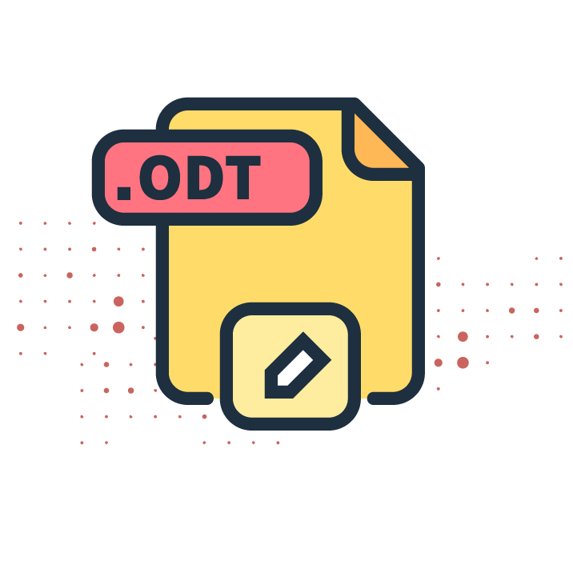
O formato ODT é um formato aberto utilizado por vários pacotes de produtividade (Open Office, Libre Office, Google Docs, versões recentes do Microsoft Office). Ao salvar um documento em formato ODT, você está fazendo uso de um formato “aberto” (Caderno Rea, 2020).
Além dos programas instalados no seu computador, você pode contar com espaços virtuais de colaboração. Um exemplo é o Google Drive, por meio do qual você pode criar documentos de texto, planilhas de cálculo, apresentação de slides, imagens em colaboração com colegas para os quais você permitir acesso. Um outro exemplo de editor de textos colaborativo é o Zoho (Caderno Rea, 2020).
Textos estão entre os recursos educacionais mais utilizadas em todas as situações de aprendizagem. Afinal, eles não dependem de estrutura física, câmera digital nem de capacidade de edição de vídeos, que podem, por exemplo, limitar tecnicamente a produção de um curso.
Veja algumas dicas para ajudar na elaboração dos textos:
- Deve-se elaborar o texto de forma a dialogar o máximo possível com o aluno.
- Deve-se privilegiar uma linguagem clara, objetiva e coloquial, adequada às características do público e que seja incentivadora e dinâmica.
- Procure evitar negações em excesso em uma mesma frase, pois ela poderá ficar confusa.
- Evite o uso da voz passiva. Procure sempre usar verbos ativos e diretos.
- Use palavras familiares ao leitor, sempre que possível; se achar necessário, crie um glossário.
- Use palavras que representem conceitos concretos, sempre que possível.
- Explique todos os termos técnicos. Para isso também pode ser usado um glossário.
- Abordagem crítica-reflexiva dos conteúdos (ao longo do material), levando o estudante a refletir e posicionar-se diante do assunto.
- Evitar afirmações preconceituosas sobre etnia, gênero, orientação sexual, religião, região demográfica etc.
- Use expressões idiomáticas ou regionais com parcimônia; lembre-se de que, na maioria dos casos, o material vai ser utilizado por pessoas de todas as regiões do país.
- Sempre que possível dê exemplos, faça analogias, use ilustrações, para esclarecer conceitos e explicações.
- Pense nas perguntas e dúvidas que o aluno pode vir a ter e procure respondê-las no texto.
- Procure dar destaque ao que é essencial, ao que o aluno deve dar mais atenção.
- Procure sempre indicar material complementar para que os alunos que desejarem possam aprofundar os estudos.
- Sugere-se ao fim revisão gramatical.
Imagens
Diversos materiais educacionais são ricos em imagens, porém nem sempre esse recurso é aproveitado de maneira significativa, deixando-se de lado todo seu potencial educacional. Em muitos cursos, as imagens aparecem como mera decoração. As imagens podem ser ótimas ferramentas pedagógicas se forem utilizadas de maneira adequada. Logo, é importante ilustrar fluxos, procedimentos, situações, casos ou contar uma história que auxilie na aprendizagem do aluno.
Veja a seguir os tipos de imagem que podem ser utilizadas:
As imagens e fotos podem ser obtidas de diferentes formas. Você pode:
Produzir imagens com câmeras digitais ou celulares.
Criar imagens utilizando softwares específicos.
Baixar imagens de bancos disponíveis na internet.
Depois de obter uma imagem, é comum precisar fazer alguns ajustes, como:
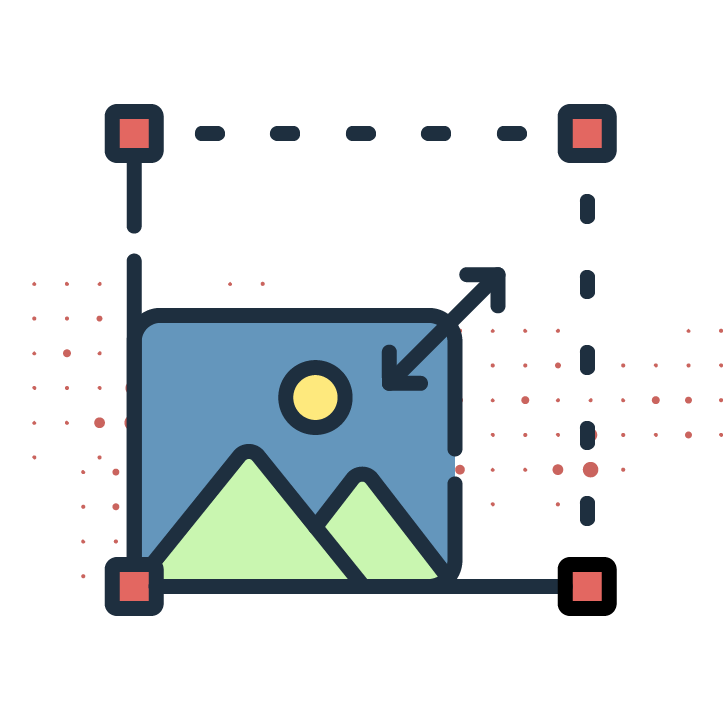
Redimensionar (alterar o tamanho).
Ajustar cores e brilho.
Corrigir imperfeições.
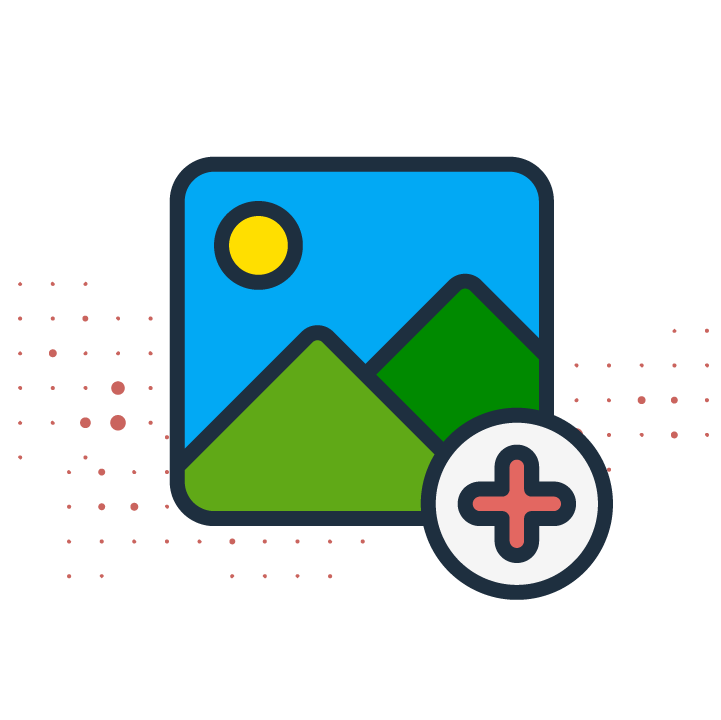
Inserir ou remover elementos
A seguir, listamos alguns bancos imagens grátis na internet:
| Plataforma | Tipo de conteúdo | Uso comercial | Exige atribuição? | Diferencial | Indicado para |
|---|---|---|---|---|---|
| Unsplash | Fotos | Sim | Não (recomendado) | Fotos artísticas e de alta qualidade. | Apresentações, sites, mídias sociais. |
| Pexels | Fotos e vídeos | Sim | Não (recomendado) | Interface simples, conteúdo variado. | Educação, redes sociais, vídeos. |
| Pixabay | Fotos, vetores, vídeos | Sim | Não | Grande variedade de formatos. | Materiais didáticos e design. |
| Freepik | Vetores, PSD, ícones | Sim (com restrições) | Sim (na versão gratuita) | Recursos prontos para design. | Design gráfico e apresentações. |
| Openverse | Imagens diversas | Depende da licença | Geralmente sim | Busca por licença aberta (CC). | Projetos educacionais (REA). |
| Wikimedia Commons | Imagens, mapas, diagramas | Depende da licença | Sim (na maioria) | Conteúdo educacional e científico. | Ensino, pesquisa acadêmica. |
| Banco de Imagens Fiocruz | fotografias e ilustrações | Não | Sim | Pesquisa, ensino e comunicação em saúde. | Ensino, pesquisa acadêmica, divulgação e REA. |
Para o formato aberto, deve ser utilizado o PNG para salvar imagens. Além disso, é importante ler a política ou termo de uso do banco de imagens, pois alguns permitem somente o reúso, sem adaptação, ou exigem a atribuição de créditos
Vídeos
Os vídeos apresentam potencial pedagógico eficaz para apoiar a aprendizagem ou promover o desenvolvimento de habilidades, como imagens compostas, diagramas animados, metáforas/simbolismos/analogias visuais, modelagem de processos, ilustração de conceitos com exemplos reais, justaposição de situações contrastantes, demonstração de habilidades por especialistas (Koumi, 2006).
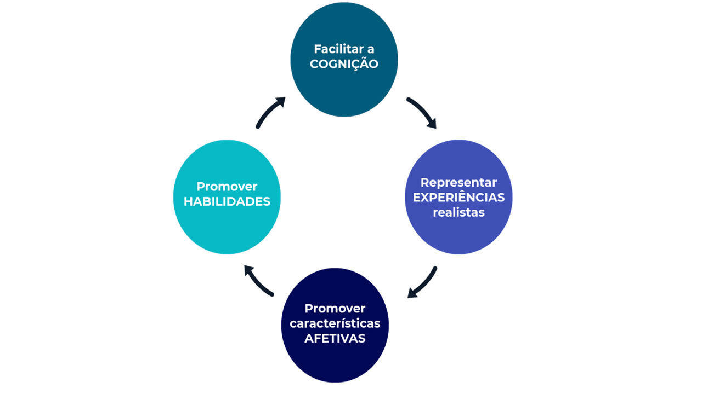
Quando bem planejados, os vídeos estimulam o engajamento, promovem a autonomia e facilitam a retenção do conteúdo. Seu uso amplia as oportunidades de aprendizagem e potencializa a construção ativa do conhecimento.
Clique aqui e saiba mais sobre o potencial pedagógico dos vídeos (texto em inglês).
Para trabalhar com vídeos, o ideal é gravar em um estúdio com câmera e equipamentos profissionais, mas entendemos que nem todos podem assumir os gastos para pagar um serviço profissional de gravação e edição. Com o avanço das câmeras dos celulares, é possível obter resultados interessantes usando um celular para gravar e editar os vídeos. Lembre-se de que antes de produzir um vídeo ou qualquer outro tipo de recurso educacional, você poderá realizar uma busca para reutilizar os disponíveis na internet, desde que estejam registrados com uma licença aberta.
Vídeos de curta duração, de 3 a 5 minutos, em geral são mais efetivos para a aprendizagem, segundo o conceito de Micro Aprendizado.
Para os vídeos, recomendamos adotar os formatos abertos:
- Mkv.
- webM.
- mp4(codec x264).
A seguir alguns softwares livres para edição de vídeo, tanto para iniciantes quanto para profissionais e com ampla variedade de recursos:
Veja aqui um tutorial sobre como elaborar videoaulas (em português).
Áudios
Áudios educativos (podcasts), em seu formato usual, contêm apenas áudio, mas variantes podem incluir imagens e vídeos. Neste curso, o foco serão os podcasts apenas com áudio. A vantagem do podcast é que ele pode ser ouvido em qualquer lugar e quantas vezes forem necessárias. Um podcast pode ser utilizado para passar um conceito ou como audionovela, dramatização do gênero literário novela para representar um caso ou situação específica com objetivo educacional.
Arquivos de áudio podem conter conceitos, aulas, narrações com orientações de estudo ou feedback para os alunos, configurando-se como importantes recursos no processo de aprendizagem. Além disso, a criação e produção de áudios podem ser propostas como projetos especiais, incentivando a interação, a criatividade e o desenvolvimento de competências digitais. Esses materiais também atuam como facilitadores da aprendizagem, porque podem ser reproduzidos em diferentes dispositivos, como computadores, tablets e celulares, permitindo o acesso em diversos contextos, seja em casa, no trajeto para o trabalho ou no transporte público. Para garantir sua efetividade, é fundamental que o conteúdo programático seja planejado e produzido especificamente para o formato em áudio.
Para gravação de um podcast não são necessários muitos recursos. Um áudio pode ser gravado com um celular.
Para edição de som, uma boa opção é o Audacity, um software livre, que oferece uma extensa gama de recursos, incluindo redução de ruídos. É uma boa pedida para quem se interessa pelo assunto e quer aprender mais. Outra opção de software livre para edição e captura profissional de áudio gratuito e de código aberto é o Ardour.
Ferramentas de autoria
As ferramentas de autoria permitem aos docentes criar os seus próprios conteúdos da web, de maneira muito simples, sem necessidade de conhecimentos técnicos de design e programação.
Além da possibilidade de criar e processar textos, as ferramentas de autoria possibilitam que professores integrem diversos tipos de mídias para criar conteúdos de aprendizagem estimulantes e interativos, e algumas tornam possível transformar elementos digitais e objetos de ensino de cursos já existentes para que sejam reutilizados em novos cursos. Destacamos a seguir algumas ferramentas que estão disponíveis para uso gratuito:
É possível criar recursos interativos com H5P, uma plataforma livre e aberta, baseada em nuvem, que permite que qualquer um crie uma grande variedade de recursos multimídia sem necessidade de aprender programação. Todos os tipos de conteúdo do H5P podem ser inseridos em websites e no ambiente virtual de aprendizagem, como o Moodle, por exemplo, usando o plugin disponível gratuitamente ou já incorporado na versão do Moodle mais recente. Os recursos desenvolvidos no H5P reportam análises e resultados das atividades para o Moodle.
O conteúdo do H5P publicado é baseado em HTML5, não utiliza Flash, tornando o acesso mais fácil para você e seus aprendizes. Além disso, todos os recursos são gerados automaticamente sob a licença Creative Commmons Attibutions 4.0 International, a menos que o autor do conteúdo altere a licença.
Por meio do H5P é possível criar recursos educacionais interativos, como:
- Apresentações.
- Flashcards ou jogo de cartas.
- Tarefas com imagens do tipo “arraste e solte.
- Vídeos interativos.
- Quiz e outros.
- Imagens interativas.
Para ver exemplos de recursos interativos H5P, acesse https://h5p.org/content-types-and-applications
EXE é a abreviatura de eLearning XHTML editor e um software de código aberto que disponibiliza, de maneira simples, a possibilidade de criar documentos HTML para aprendizagem. Basicamente, é uma ferramenta que auxilia professores e alunos a publicar qualquer tipo de conteúdo de aprendizagem na web sem necessidade de ser proficiente nas linguagens de marcação de páginas HTML ou XML.
O projeto eXeLearning é uma ferramenta de autoria disponibilizada gratuitamente, como software aberto (Open Source).
Os recursos criados com eXeLearning podem ser exportados em diversos formatos:
- IMS Content Package.
- IMS Common Cartridge forma.
- Página web simples.
- Sites web autocontidos.
- SCORM 1.2.
- Arquivo de texto simples.
- Conjunto de anotações.
O Xerte é uma plataforma de autoria open source para criação de conteúdos educacionais interativos diretamente no navegador, sem necessidade de programação avançada.
Entre suas principais funcionalidades destacam-se a criação de materiais multimídia (como quizzes, vídeos e apresentações), o uso de templates prontos e personalizáveis, e um editor intuitivo que facilita o desenvolvimento dos conteúdos.
Além disso, os materiais produzidos são responsivos em HTML5, adaptando-se a diferentes dispositivos, e contam com recursos de acessibilidade e integração com ambientes virtuais de aprendizagem, como o Moodle.
O Adapt Learning é uma plataforma de autoria para e-learning que permite criar cursos interativos, modernos e totalmente responsivos. Desenvolvida com tecnologias web como HTML5, CSS3 e JavaScript, possibilita a produção de conteúdos que funcionam perfeitamente em diferentes dispositivos — como computadores, tablets e smartphones — mantendo uma experiência de navegação consistente e de qualidade para o usuário.
Entre suas principais funcionalidades destaca-se a capacidade de adaptação automática do conteúdo a diferentes tamanhos de tela, garantindo acessibilidade e usabilidade em qualquer ambiente. Além disso, o Adapt Learning oferece suporte à criação de experiências ricas e interativas, favorecendo o engajamento dos alunos.
Narrativas Digitais
Histórias contadas digitalmente a partir de filmes multimídia que podem incluir: fotografia, vídeo, animação, som, música, texto e muitas vezes uma voz narrativa. A narrativa digital, que em inglês se denomina Digital Storytelling, combina a força da narrativa e da tecnologia (Marinhos, 2020).
Contar histórias é um meio eficaz que pode ser usado para capturar e compartilhar conhecimento tácito, aprimorar o aprendizado reflexivo e promover comunidades de prática.
Para realizar plenamente o potencial de aprendizado da narrativa digital, as histórias devem ser compartilhadas entre os alunos, e os indivíduos precisam de oportunidades para refletir colaborativamente.
O processo de criação, compartilhamento e discussão de histórias digitais, portanto, pode ser uma ponte que liga conceitos abstratos a experiências pessoais que aprimoram a experiência de aprendizagem.
A seguir apresentaremos alguns formatos de narrativas digitais:
Infográficos
A infografia é vista como recursos gráficos que enriquecem o texto tornando a informação visualmente atrativa, e que “implica filtragem da informação, estabelecer relações, diferenciar padrões e representá-los de uma forma que permitam ao leitor compreender que tal informação constrói algo com significado”.
- Podem ser utilizados tanto no material didático como atividade proposta para o aluno.
- Podem resumir artigos graficamente.
- Necessitam de um roteiro prévio para serem produzidos.
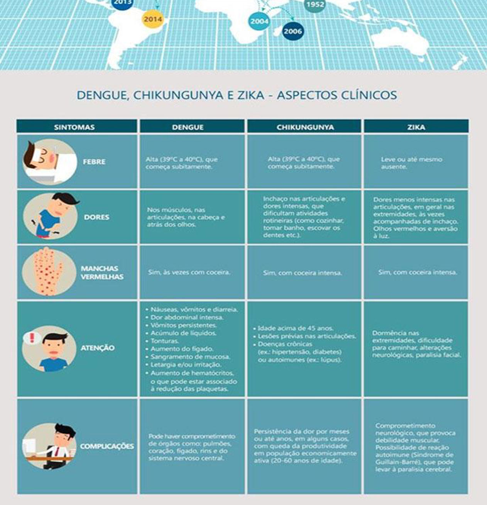
Casos interativos
Utilizados para apresentar casos clínicos. No exemplo, é possível clicar e obter informações onde se quer destacar alguns pontos do exame do paciente.
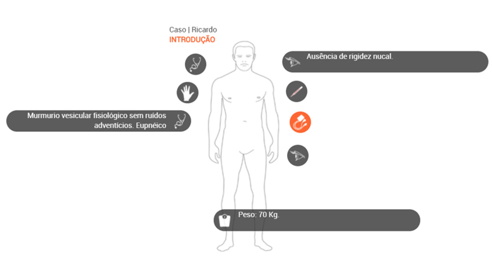
MOOC
Os MOOCs (Massive Open Online Courses) são cursos online abertos e massivos, criados para atender a um grande número de participantes, geralmente de forma gratuita ou com baixo custo e sem exigência de pré-requisitos. O conceito ganhou relevância a partir de 2008, com o curso Connectivism and Connective Knowledge, desenvolvido por George Siemens e Stephen Downes, e se consolidou com plataformas como Coursera, edX e Udacity. Segundo a Unesco, os MOOCs ampliam o acesso à educação e contribuem para a democratização do conhecimento em escala global.
Entre suas principais características estão escalabilidade, flexibilidade de acesso e uso de diferentes recursos pedagógicos, como vídeos, fóruns e avaliações automatizadas. Esses cursos são utilizados tanto na educação formal quanto na formação continuada e corporativa. De acordo com a Organisation for Economic Co-operation and Development e pesquisadores como Daphne Koller, os MOOCs ampliam oportunidades de qualificação, apoiando o desenvolvimento profissional ao longo da vida (Unesco, 2016; OECD, 2019; Britannica, 2026).
O Campus Virtual Fiocruz oferece diversos cursos MOOCs relacionados às áreas de saúde e comunicação/divulgação da ciência. Clique aqui e acesse.
Habilidades Digitais Docentes
Você consegue relacionar quais habilidades são necessárias em um contexto digital?
Listamos a seguir as principais competências digitais:
- Criar e editar áudio e vídeo.
- Explorar as imagens digitais.
- Usar conteúdos audiovisuais.
- Usar infográfico para estimular visualmente estudantes.
- Criar vídeo com imagens e tutoriais em vídeo.
- Coletar adequado conteúdo da web para a aprendizagem.
- Compreender as questões relacionadas com direitos autorais e uso ético de materiais e recursos didáticos.
- Utilizar as ferramentas digitais para criar questionários de avaliação.
- Utilizar dispositivos móveis (por exemplo, smartphones).
- Usar ferramentas digitais para gerir o tempo adequadamente.
- Conhecer como usar plataformas de vídeos.
- Utilizar blogs e ferramentas de anotação e compartilhar esse conteúdo com seus alunos e estudantes.
- Utilizar ambientes virtuais de aprendizagem.
- Conhecer as licenças e saber identificá-las.
- Conhecer os principais formatos abertos.
Caso queira mapear suas competências digitais e conhecer caminhos para as melhores práticas de tecnologia aplicada à aprendizagem dos alunos, acesse a Autoavaliação de Competências Digitais de Professores do Guia Edutec.
Resumo de ferramentas úteis
- Webconferências/Webinar
- Jitsi
- Mumble
- Bigbluebutton
- Colaboração on-line
- Wikimedia
- OnlyOffice
- Etherpad
- Editor de imagens/Infográficos
- Gimp
- Krita
- Portfólio/Diário de Aprendizagem
- Wordpress
- Apresentações interativas, Quiz
- H5P
- Ferramenta de autoria
- Exelearning
- Adapt
- Xerte
Como compartilhar um REA
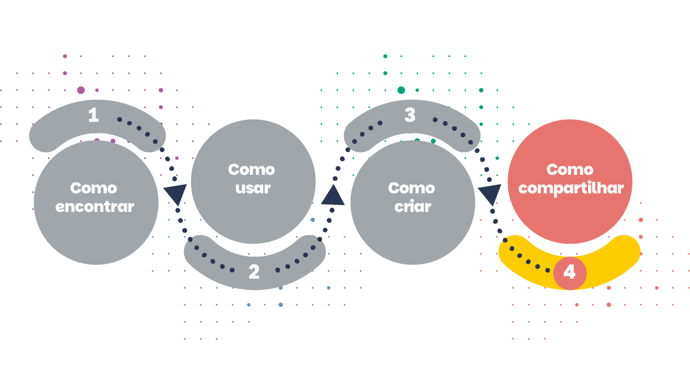
Além de utilizar recursos educacionais abertos, educadores também podem contribuir com o movimento de educação aberta compartilhando os materiais que produzem.
Esse compartilhamento pode ocorrer por meio de:
- Repositórios institucionais.
- Plataformas educacionais abertas.
- Ambientes Virtuais de Aprendizagem.
- Portais educacionais.
Ao disponibilizar um material com licença aberta, o autor permite que outras pessoas possam reutilizar, adaptar e compartilhar esse recurso.
Os Recursos Educacionais Abertos ampliam as possibilidades de acesso ao conhecimento e favorecem práticas educacionais mais colaborativas.
Ao facilitar a reutilização, a adaptação e o compartilhamento de materiais educacionais, os REA contribuem para fortalecer a circulação do conhecimento e apoiar processos de formação em diferentes contextos educacionais.
Saber encontrar, selecionar e utilizar REA de forma crítica é uma competência importante para educadores, pesquisadores e profissionais que atuam em ambientes de ensino e aprendizagem.
Como citar esta aula:
SILVA, Rosane Mendes da. Software livre e REAs. In: PROGRAMA DE FORMAÇÃO MODULAR EM CIÊNCIA ABERTA. Módulo 5: Educação aberta e recursos educacionais abertos. Aula 6. 1. ed. Rio de Janeiro: Fiocruz, 2025. Disponível em: https://mooc.campusvirtual.fiocruz.br/rea/ciencia-aberta-2ed/modulo5/aula6.html. Acesso em: 14 abr. 2026.